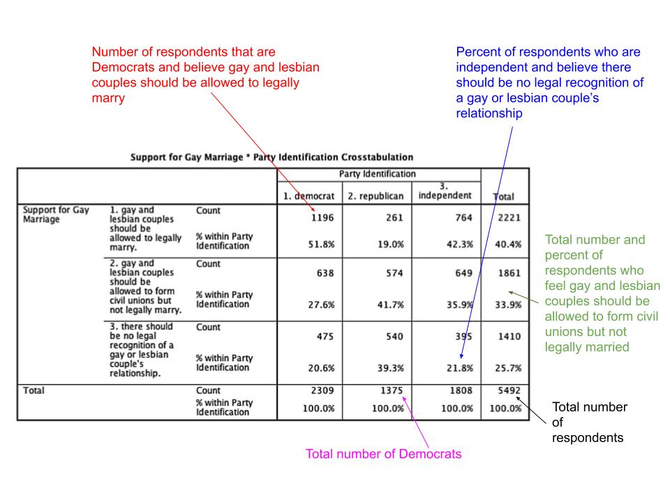

Learning Objectives
In this tutorial, you will learn how to describe the relationship between two variables measured at the nominal and/or ordinal level. Specifically, we will cover:
- How to conduct a descriptive analysis of the relationship between two nominal or ordinal variables (or one of each) using cross-tabs.
- How to use the
CrossTable()function in the R package descr to produce cross-tabs. - How to plot the information in cross-tabs using grouped bar plots
using the
ggplot()function in the R package ggplot2.
Bivariate Description
Once we have described the main features of the individual variables in our study, we want to look at the relationship between variables. The hypotheses we bring to our analyses suggest what we should see when we do so. For example, if we hypothesize that more rural counties were more likely to support Donald Trump in 2016, we can begin to examine the evidence by comparing the proportion of counties that cast a majority of their votes for Donald Trump in more rural counties to that in more urban counties. Or we could compare the mean vote share in urban and rural counties.
How we describe bivariate relationships, relationships between two variables, depends on the level of measurement that characterizes the variables.
If the relationship we wish to describe involves categorical variables – some combination of nominal and ordinal variables – we describe the relationship using a cross-tabulation, which we may choose to represent as a plot.
If the relationship involves one nominal or ordinal variable and an interval level variable, we can compare the mean of the interval variable across categories of the nominal or ordinal variable. Plots may be used to illustrate the differences (or similarities) in the means.
If both variables are measured at the interval level, we can illustrate the relationship with a scatter plot and describe its strength and direction with the correlation coefficient.
In this tutorial, we will consider the first of these types of description: how to describe relationships between categorical variables measured at the nominal and ordinal levels. The next two tutorials will cover the last two types of relationships.
Describing the Relationship Between Two Nominal or Ordinal Variables
We use a cross-tab to describe the relationship between nominal and ordinal variables. A cross-tabulation (or cross-tab) is a table that shows the distribution of cases (counts or proportions) across values of the dependent variable for cases that have different values on the independent variable.
You’ve seen these tables in textbooks and other places many times. Each row of the table presents the different values one variable can take, and each column represents the values another variable takes. Each cell gives the number of cases in the data for a particular row variable value and column variable value. Below the table are the total number of cases in a column, and to the right of the table are the total number of cases in a row of the data. The bottom right corner gives the total number of cases in the table. The cross-tab may also report proportions or the percentage of cases in each cell of the table out of all cases in a column, a row, or in the table overall. Which of these representations is most useful will depend on our purpose.
The image below illustrates the contents of a cross-tab that illustrates the relationship between the party identification of a survey respondent and their attitudes toward gay and lesbian relationships. The percentages given are calculated out of all cases in a column.

We can see that 1196 or 51.8% of Democratic respondents were supportive of legal marriage; that 385 or 21.8% of independents were opposed to any legal recognition; that there were 2309 Democratic respondents; that 1861 respondents or 33.9% chose the middle response; and that there were 5492 respondents in the survey who answered both questions.
Generating Cross-tabs
We will follow two rules for the design of the cross-tab that allow us to illustrate the relationship between an explanatory variable and an outcome variable.
Rule 1: the explanatory variable will be placed in the columns, and the outcome variable in the rows of the table.
Rule 2: proportions will be calculated out of column totals.
We’ll see below how this facilitates comparison.
The CrossTable() Function
To produce a cross-tab, we will use the CrossTable()
function from the R package descr. The
function requires two arguments, x and y.
x defines the variable to appear in the rows of the table
and should be the outcome or dependent variable. y defines
the variable to appear in the columns and should be the explanatory or
independent variable. By default, CrossTable() produces a
cross-tab with proportions calculated for each row, each column, and the
full table. Typically, however, we are interested in just column
proportions, so we will set the prop.r (which stands for
row proportions) and the prop.t (which stands for total
proportions) arguments to FALSE. Finally, we will set the
prop.chisq (which stands for chi square contribution)
argument to FALSE. Doing so will eliminate clutter and make
the table easier to read.
The data set counties contains a variable called rural, a 3-category ordinal variable where the 0 represents more urban counties, 1 represents counties that are neither urban nor rural, and 2 represents counties that are more rural. It also contains a nominal variable called TrumpMajority, which takes a value of 0 if Hillary Clinton won a majority of the vote and 1 if Donald Trump won a majority of the vote. We’ll use this data to create our first cross-tab and to see how we use it to assess the hypothesis that Trump did better in more rural counties.
We need to first load the descr
package with the library() function so that we can use the
CrossTable() function.
library(descr)
CrossTable(x = counties$TrumpMajority, y = counties$rural,
prop.r = FALSE, prop.c = TRUE, prop.t = FALSE,
prop.chisq = FALSE)Let’s test your interpretation of the cell entries in this table:
Assessing our hypothesis
Now that we’ve interpreted individual cell entries, let’s see what we can learn about our hypothesis: In a comparison of [counties], those that are [more rural] will be more likely to [give a majority of their support to Trump] than will those that are [less rural (more urban)].
Does the evidence support this hypothesis? If more rural counties are more likely to have cast a majority of their votes for Trump, what should we see?
By organizing our cross-tab such that the outcome variable is in the rows and the proportions in the table are column proportions, we can interpret the cross-tab by comparing proportions across columns at the same value of the dependent variable (in the same row). How does the proportion (or, if we multiply them by 100, the percentage) of counties who are in the more rural or more urban categories vary based on whether or not a majority of voters supported Trump?
We know that the value 0 for rural denotes that a county is urban, 1, that it is neither urban nor rural, and 2 that it is rural. Thus, we expect the proportion of counties among those casting a majority of votes for Trump (MajorityTrump=1) in row 2 to increase as we move across the columns from the left to the right. We would also expect the reverse to be true for counties that cast a majority of votes for Clinton (MajorityTrump=0) in row 1.
I’ve reproduced the cross-tab here so that you don’t have to look back.
## Cell Contents
## |-------------------------|
## | N |
## | N / Col Total |
## |-------------------------|
##
## =======================================================
## counties$rural
## counties$TrumpMajority 0 1 2 Total
## -------------------------------------------------------
## 0 303 144 43 490
## 0.261 0.109 0.069
## -------------------------------------------------------
## 1 859 1179 584 2622
## 0.739 0.891 0.931
## -------------------------------------------------------
## Total 1162 1323 627 3112
## 0.37 0.42 0.20
## =======================================================Consider the proportion of counties in which a majority voted for Clinton (row 1). Comparing the proportions across columns we see that 0.261 or about 1/5 of the urban counties are counties in which a majority voted for Clinton while 0.069 or 6.9% of counties in the rural category did so. Furthermore, of counties that are neither urban nor rural, the proportion of counties in which a majority of votes were cast for Clinton fell between these two values with a proportion of 0.109. So far the evidence supports the hypothesis.
Similarly, if we consider the proportion of counties that cast a majority of votes for Trump, we see support for the hypothesis. A higher proportion of rural counties, 0.931, cast their votes for Trump compared to 0.891 for neither urban nor rural counties, and 0.739 for urban counties.
Racial Majority and Support for Donald Trump in US Counties
We might hypothesize that: In a comparison of [counties], those that are [majority-white] will be more likely to [give a majority of their support to Trump] than will those that are [not majority-white].
The data frame counties contains a nominal variable called racial_majority that takes the character values “Black Majority,” “Hispanic Majority,” “Other/No Majority,” and “White Majority.” Thus, our hypothesis suggests that when we compare the proportion of counties within each racial majority category, the highest proportion of counties casting a majority of votes for Donald Trump will be “White Majority.”
Edit the code below to produce a cross-tab to assess this hypothesis.
CrossTable(x = counties$XXXX, y = counties$XXXX, prop.r = XXXX, prop.c = XXXX, prop.t = XXXX, prop.chisq = XXXX)Remember x gives the row variable, which should be set equal to the
outcome or dependent variable. y gives the column variable and
should be set to the explanatory or independent variable.
Because we only want column percentages, prop.c should be set to
TRUE and all other arguments to FALSE>CrossTable(x = counties$TrumpMajority, y = counties$racial_majority, prop.r = FALSE, prop.c = TRUE, prop.t = FALSE, prop.chisq = FALSE)Does this table support the hypothesis? Yes, because a much larger proportion of majority white counties cast a majority of their votes for Donald Trump than did counties with any other (or no) racial majority.
Gender Equality and Regime Type
For a final illustration, we will examine the relationship between the nominal variable regime_type3, which takes the values “Dictatorship,” “Parliamentary democ,” or “Presidential democ” and the ordinal variable gender_equal3, which may be “Low,” “Medium,” or “High.” The variables are in the data frame world.
Write the code to generate the cross-tab and run it. Assume we hypothesize that: In a comparison of [countries], those that are [dictatorships] will be less likely to [have a high degree of gender equality] than will those that are [not dictatorships].
Did you use the CrossTable function? Remember that you need to list
the outcome variable first (gender equality) by assigning it to the x
argument. Then set the y argument to the variable you want in the columns
of the table. Finally, specify which information you do and do
not want in the table cells using the prop.r, prop.c, prop.t, and
prop.chisq arguments.CrossTable(x = world$gender_equal3, y = world$regime_type3, prop.r = FALSE, prop.c = TRUE, prop.t = FALSE, prop.chisq = FALSE)Is there support for our hypothesis? Yes, of countries that are dictatorships, most have low gender equality and only a few have high gender equality. For non-dictatorships, low levels of gender equality are the least common outcome.
Visualizing the Information in Cross-tabs using
ggplot()
We can plot the information in a cross-tab using a bar plot. We
created bar plots with ggplot() in the R package ggplot2 in the tutorial “Univariate
Description: Nominal Variables” to visualize a single nominal variable
and in the tutorial “Univariate Description: Ordinal Variables” to
visualize a single ordinal variable. When presenting the information in
a cross-tab in a bar plot, the data are grouped such that the bars
represent the frequency or proportion of cases for each value of one
variable broken down by values of another variable. Thus we can plot the
number or proportion of counties in each category of the variable
TrumpMajority for each category of the variable
rural.
The fill aesthetic
We follow the same basic steps to build a grouped bar plot as we did for a bar plot representing a single nominal or ordinal variable.
- Tell
ggplot()the name of the data set that contains the variable(s) to plot. - Tell
ggplot()which variable(s) to plot and on which axis. We do this by mapping the variables to the appropriate axis using themappingargument and theaes()function. - Tell
ggplot()how to plot the data by adding a geom layer. - Add layers that make the plot more informative by adding labels and formatting scales.
When plotting a single variable, we simply identified x
inside the aes() function in step 2. In order to visualize
two nominal and/or ordinal variables in a bar plot, we add a
fill argument to the aes() function to specify
the grouping variable. Which variable do we specify as the
x and which as fill? The dependent variable
should be on the x-axis. The fill aesthetic breaks down the
categories of the x-axis variable based on values of the variable mapped
to the fill aesthetic.
Below I’ve provided the code to create a bar plot of the frequencies
from the cross-tab relating the variable rural in the
counties data frame to TrumpMajority.
We specify both x and fill variables as
factors so that ggplot() knows the values of these
variables are discrete (whole numbers only).
Don’t forget that we need to load ggplot2 before we can use the
ggplot() function.
library(ggplot2)
ggplot(data = counties, mapping = aes(x = factor(TrumpMajority), fill = factor(rural))) +
geom_bar() This bar plot is called a stacked bar plot because there is one
column for each value of the x variable and it is divided
up based on the number of cases for each value of the fill
variable.
position=“dodge”
If we prefer to place the bars side-by-side rather than stacking
them, we simply add position="dodge" inside the
geom_bar() function.
ggplot(data = counties, mapping = aes(x = factor(TrumpMajority), fill = factor(rural))) +
geom_bar(position = "dodge") Whether you prefer a side-by-side or stacked bar plot is a often matter of personal taste but sometimes it can be harder to make comparisons with the stacked bar plot.
Before we make this plot more informative, let’s consider how to plot proportions rather than frequencies. Proportions will be more informative if we wish to draw comparisons across the groupings because the number of cases in each category of the x-axis variable may be different, as here!
Plotting Proportions
To plot proportions, we proceed in parallel fashion to the the bar
plot for a single categorical variable. We set an aesthetic inside the
geom_bar() layer. Specifically, we set
y = after_stat(prop) to represent the y axis as a
proportion. What is new here is that we need to add
group = factor(rural) so that ggplot() will
calculate the proportions based on the number of cases in each value of
the fill variable.
ggplot(data = counties, mapping = aes(x = factor(TrumpMajority), fill = factor(rural))) +
geom_bar(position = "dodge", mapping = aes(y = after_stat(prop), group = factor(rural))) As we can see, the sum of the height of the red bars is equal to one, the sum of the height of the green bars is equal to one, and the sum of height of the blue bars is equal to one. This makes it easy to compare the relative proportions within a category of the fill variable across the categories of the x-axis variable. Thus we see here that Trump won more counties, regardless how urban or rural a county, and that he won relatively more “rural” counties than either “neither urban nor rural” or “urban” counties.
Making the plot more informative
We can make each of these plots more informative by adding a
labs layer to provide a title,
subtitle, x and y axis labels,
and a caption as well as an scale_x_discrete
layer to change the labels for the tick marks on the x-axis, as we have
before. But we also want to add a new layer to make the legend
informative. To do so we add a scale_fill_discrete() layer.
We use this function to edit the legend associated with a discrete
variable (one that can take only integer values) that is identified by
fill inside the aes() function. We use the
name argument to provide the name for the legend and the
labels argument to provide names for the values of
variables. Be sure to use the c() function, place each
label in quotations, and and separate each with a comma.
Before you execute the code below, read through it carefully. You will have to edit code below to produce similar plots.
ggplot(data = counties, mapping = aes(x = factor(TrumpMajority), fill = factor(rural))) +
geom_bar(position = "dodge", aes(y = after_stat(prop), group = factor(rural))) +
labs(title = "Proportion of Counties Casting \na Majority of Votes for Clinton and Trump",
x = NULL,
y = "Proportion",
caption = "Source: Linn, Nagler, and Zilinsky") +
scale_x_discrete(labels = c("0" = "Clinton", "1" = "Trump")) +
scale_fill_discrete(name = "Urbanicity",
labels = c("Urban", "Neither Urban \nnor Rural", "Rural")) Race and Support for Donald Trump
Let’s create a bar plot to represent the cross-tab examining the
relationship between TrumpMajority and
racial_majority. We want to present the proportion of
counties casting a majority of votes for Hillary Clinton and Donald
Trump grouped by the categories of racial_majority.
Note that because racial_majority is a character
variable, we don’t need to specify the factor() function
when naming this variable. Note, too, that the plot will display the
bars in alphabetical order and that we could omit the
labels argument in scale_fill_discrete()
because the grouping variable is a character variable. I’ve included it
here, shortening the labels, for practice.
Replace the XXX in the following code to produce the desired plot. Place the bars side-by-side.
ggplot(data = counties, mapping = XXX(x = factor(XXX), fill = XXX)) +
geom_bar(XXX = XXX, aes(y = after_stat(prop), group = XXX)) +
labs(title = "Proportion of Counties Casting \na Majority of Votes for Clinton and Trump",
x = NULL,
y = "Proportion",
caption = "Source: Linn, Nagler, and Zilinsky") +
scale_x_discrete(labels = c("Clinton", "Trump")) +
scale_fill_discrete(name = "Majority",
labels = c("Black", "Hispanic", "Other/No", "White")) Did you replace the first XXX aes?The x variable is TrumpMajority.
We want to group by racial_majority so we provide this
variable name to the fill argument.We need to specify position = "dodge" inside geom_bar().
This places the bars side-by-side.To tell ggplot how to calculate proportions for the
plot we need to set group to the grouping variable
specified with the fill argument.ggplot(data = counties, mapping = aes(x = factor(TrumpMajority), fill = racial_majority)) +
geom_bar(position = "dodge", aes(y = after_stat(prop), group = racial_majority)) +
labs(title = "Proportion of Counties Casting \na Majority of Votes for Clinton and Trump",
x = NULL,
y = "Proportion",
caption = "Source: Linn, Nagler, and Zilinsky") +
scale_x_discrete(labels = c("Clinton", "Trump")) +
scale_fill_discrete(name = "Majority",
labels = c("Black", "Hispanic", "Other/No", "White")) This is a super informative and professional visualization. It produces the same information as in the cross-tab we generated above, but we can interpret it much more easily. We can clearly see that of the “Black Majority” counties, a much larger proportion (about 0.95) cast a majority for Clinton, while a much smaller proportion (about 0.05) cast a majority for Donald Trump.
Regime Type and Gender Equality
Try to present the relationship between
gender_equal3 and regime_type3 in the
data frame world in a proportions bar plot. Start by
building a basic side-by-side proportion plot, without worrying about
the labels. Remember that you need to call the ggplot()
function, specify the data and mapping
arguments and that you need to specify both the variable to map to the
x-axis (x) and to group by (fill) inside the
aes() function. To plot proportions, remember that you need
to specify another aes() inside geom_bar() by
setting y = after_stat(prop) and setting group
equal to the fill variable.
The first argument of the ggplot function is data.
The data for this example is **world**.The next argument is the mapping (don't forget the comma
separating arguments). It is set to the aes function where
you specify the x argument as gender_equal3 and the fill
argument as regime_type3Add a plus at the end of the line and then specify the
geom_bar function. To get a side-by-side plot we need to specify position="dodge" inside geom_bar().To get proportions we need to specify the aes function
inside geom_bar, setting y = after_stat(prop). Also inside the aes function,
set group equal to the fill variable above, regime_type3.
(Check your commas)ggplot(data = world, mapping = aes(x = gender_equal3, fill = regime_type3)) +
geom_bar(position = "dodge", aes(y = after_stat(prop), group = regime_type3)) The first thing we see is that there is a lot of missing data. You
may want to eliminate this information from the plot. The easiest way to
omit the NAs from the plot is to use the filter() function
in the dplyr package. The
filter() function keeps rows of the data frame that meet
some condition. Here we want to keep those rows where
gender_equal3 is not missing and
regime_type3 is not missing. To do so, inside the
filter() function we specify
!is.na(gender_equal3), !is.na(regime_type3).
Remember the pipe operator? Here we start with the data frame
world “and then” (%>%) we filter() so
that we keep only non-missing data “and then” we pipe that result to
ggplot(), which means we don’t need to specify the
data argument inside ggplot(). Otherwise,
nothing has changed.
Don’t forget to load the dplyr
package with the library() function!
library(dplyr)
world %>%
filter(!is.na(gender_equal3), !is.na(regime_type3)) %>%
ggplot(mapping = aes(x = gender_equal3, fill = regime_type3)) +
geom_bar(position = "dodge", aes(y = after_stat(prop), group = regime_type3))To complete the plot, let’s fix labels.
world %>%
filter(!is.na(gender_equal3), !is.na(regime_type3)) %>%
ggplot(mapping = aes(x = gender_equal3, fill = regime_type3)) +
geom_bar(position = "dodge", aes(y = after_stat(prop), group = regime_type3)) +
labs(title = "Gender Equality",
x = "",
y = "Proportion") +
scale_fill_discrete(name = "Regime Type",
labels = c("Dictatorship", "Parliamentary \nDemocracy", "Presidential \nDemocracy"))We can quickly see that across the categories of gender equality values the regime type with the lowest level of equality is “Dictatorship” and that “Parliamentary Democracy” is the regime type with the highest proportion of countries having the highest level of gender equality.
The Takeaways
The key things to remember about examining the relationship between two categorical variables, whether nominal and/or ordinal level variables are:
We use cross-tabs to present the relationship in tabular form. This has the advantage of providing precise frequencies and proportions. Three rules guide the presentation and interpretation of cross-tabs:
- Rule 1: the explanatory variable will be placed in the columns and the outcome variable in the rows of the table.
- Rule 2: proportions will be calculated out of column totals.
- Rule 3: interpret the results by comparing proportions in each column category within rows of the table.
Grouped bar plots present the information in a cross-tab in visual form. This makes it easy to see patterns, but does not provide the exact counts or proportions in any given cell of the table.
It can be difficult to remember all the lines of code to produce exactly the plot you want. I encourage you to keep notes on where you can look – in which tutorials – to find code to produce different types of plots. But the basic elements of all grouped bar plots to remember are:
- The outcome or dependent variable goes on the x-axis
- The explanatory or independent variable is specified using the
fillargument. - Proportions should be used if you want to draw meaningful
comparisons to test hypotheses because the number of cases in each
category of the dependent variable will not, in general, be the same. We
generate proportions by specifying
aes()inside thegeom_bar()function wherey = after_stat(prop)and we setgroupequal to thefillvariable.
- If the variable’s values are numeric, you need to enclose them
inside
factor()so thatggplot()knows the variable’s values must be discrete (whole numbers).